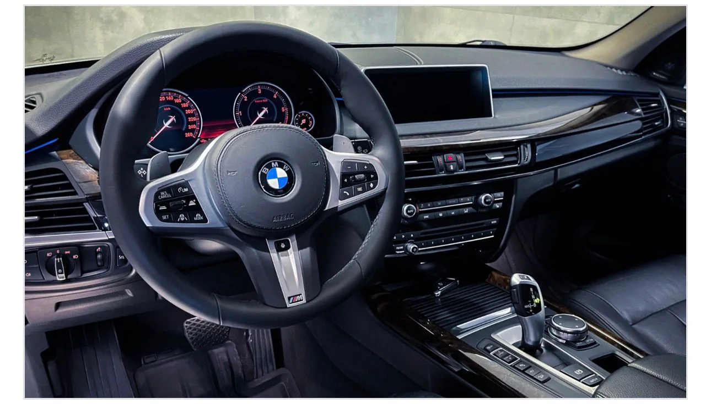
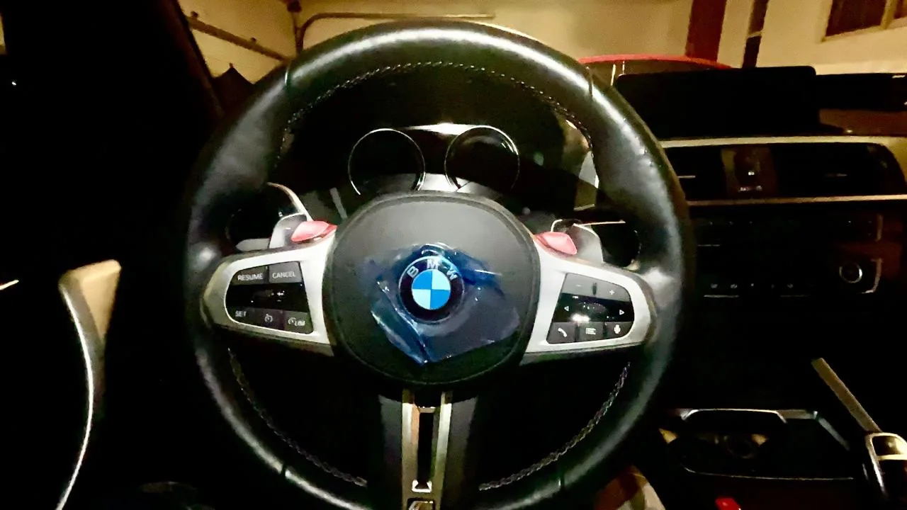

Proyectos · Volantes
Antes y después,
Antes y después,
volante por volante.
Dos proyectos, un mismo cambio: un volante de generación G, montado en un auto de generación F. Así se veía antes, así se ve ahora.

Proyecto 1 · X5 / X6El volante G, en una X5/X6.
X5 y X6 comparten el mismo interior. El antes y el después de un volante M de generación G en esa cabina.

Proyecto 2 · Serie 2 220iDe M Sport a M Competition.
Un 220i M Sport 2021, con su volante original, y ahora con el volante M Competition de generación G, ya montado.
Las fotos del proyecto X5/X6 son de referencia: muestran cómo se ve un antes y un después. Se cambiarán por fotos de nuestros propios instalados.